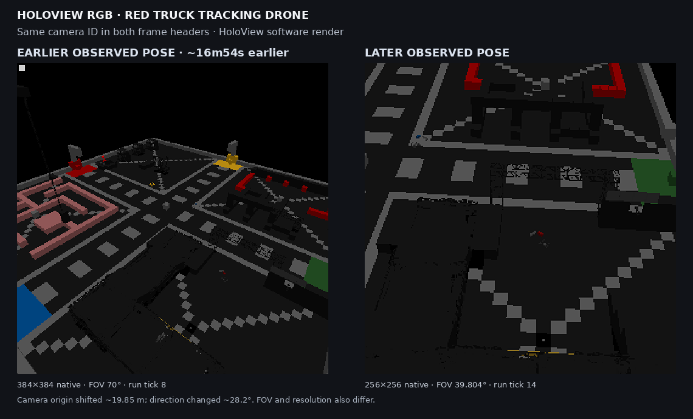
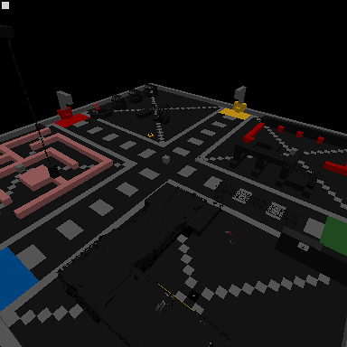
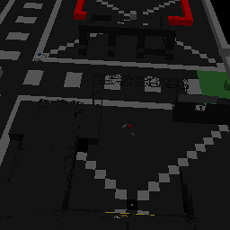

YUREI RESEARCH
YUREI RESEARCHMission briefing
For a while, our test rig could find vehicles and draw their world around them, but that did not answer the important question: could we observe a real vehicle doing a real thing without borrowing a human at the keyboard? The mission was simple: move one truck; keep the humans out of the driver’s seat.
The latest disposable test world gave us a clean shot. We loaded the saved recording, enabled the built-in Move block’s AI behavior, and let the game’s Path Recorder take command for a bounded run. No custom wheel steering or propulsion overrides were applied. Nobody reinvented the wheel, which was fortunate: the vehicle already had four.
Contact report: direct observations
- The run lasted 7,200 simulation ticks.
- The Move block’s AI behavior and autopilot were active during playback. Four
- The sampled waypoint sequence started at waypoint 9, reached waypoint 32,
- The truck reached a maximum sampled displacement of 91.235 metres from its
- Four configured LCD camera feeds each left 13 time-stamped software-rendered
wheels were present; wheel propulsion and steering overrides stayed at zero.
and wrapped back to waypoint 9 at tick 4,080. At the time limit it was on waypoint 28 of the next pass.
starting point and was 39.922 metres from that point when the bounded window ended.
frames in the disposable world copy. The camera view from the drone visibly changed between its first and last saved samples.
What this means
We now have a working control case: Space Engineers’ own recorder and AI Move behavior can move this truck through its saved route in our headless test environment. That gives us something much better than “the markers look about right” to compare against when we return to Voidwright.
The little cameras matter too. We can keep a sequence of rendered observations with simulation tick and camera-pose metadata instead of treating a single pretty picture as ground truth. It is a modest visual black box, but a black box with timestamps is already a much better witness.
Command assessment: one truck moved, one waypoint loop wrapped, and four feeds left receipts. Morale is high. Nobody is authorized to put “solved autonomous navigation” on the poster.
Side mission: overhead camera before and after
This figure is a separate V2R3 chamber capture, not footage from the R8 drive above. HoloView’s software renderer exported two views attributed to the same overhead drone about 16m54s apart. Their recorded camera origins differ by about 19.85 m, and their forward directions by about 28.2°.

The pair makes the camera/render pipeline’s output tangible: two pose-tagged observations of the same disposable chamber. It is not a controlled camera-motion trial. Resolution, field of view, render tick, and scene state also differ, so image differences cannot be attributed to pose alone. These are HoloView software renders—not native framebuffer captures or simulator ground truth. The white corner marker is the renderer’s calibration marker, not an in-world object.
Native-resolution frames are available separately; the comparison plate above enlarges both with nearest-neighbor scaling for side-by-side inspection.


Side mission: frame-linked scene metadata
A later, bounded V2R3 capture sampled the same HoloView camera at ticks 16, 136, and 267. Each software-rendered frame now has a matching JSON sidecar keyed by capture, camera, output, surface, and tick. It records HoloView's renderer-side candidate grids and their world bounds: 13 grid candidates per frame, with the candidate block count changing from 2,948 to 2,808 to 2,724. These are scene metadata from the renderer—not pixel-derived detections, proof that every candidate was visible, or simulator ground truth.
What we did *not* prove
This was not a Voidwright autonomous-navigation success. The game’s native Move block and saved Path Recorder drove the vehicle; Voidwright did not choose the route or command its wheels. Nor is this native GPU or framebuffer capture: the LCD images came from a mod’s software renderer. The short bounded run crossed a route loop, but it was not intended to qualify every obstacle, vehicle configuration, or repeatability condition.
Related research records
- Multiview Cameras 001 documents the
- Voxel Guidance 006 is a separate
headless HoloView capture path and its renderer-side scene metadata. It is the formal record for the camera pipeline, not proof that the R8 truck was controlled by that apparatus.
Blender-generated temporal-perception calibration. It explicitly did not test transfer to Space Engineers imagery, so it is context rather than evidence for this run.
Next sortie
Use this recording as the baseline. Then hand one responsibility at a time to Voidwright, keep the same observable telemetry, and compare the result against the known route. If the truck takes a wrong turn, we want the receipt to tell us which system had the wheel.